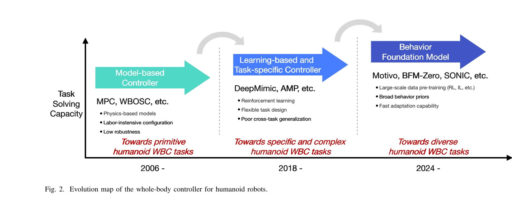

Essence

Fig. 1. A behavior foundation model learns broad behavior priors from large-
본 논문은 휴머노이드 로봇의 전신 제어(WBC)를 위한 행동 기초 모델(BFM)의 발전과 응용을 종합적으로 조사하며, 대규모 사전학습을 통해 재사용 가능한 행동 기초를 학습하여 다양한 작업에 빠르게 적응할 수 있는 차세대 제어 시스템을 제시한다.
저자: Mingqi Yuan, Tao Yu, Wenqi Ge, Xiuyong Yao, Huijiang Wang, Jiayu Chen, Bo Li, Wei Zhang, Wenjun Zeng, Hua Chen, Xin Jin | 날짜: 2025-06-25 | URL: https://arxiv.org/abs/2506.20487
Fig. 1. A behavior foundation model learns broad behavior priors from large-
본 논문은 휴머노이드 로봇의 전신 제어(WBC)를 위한 행동 기초 모델(BFM)의 발전과 응용을 종합적으로 조사하며, 대규모 사전학습을 통해 재사용 가능한 행동 기초를 학습하여 다양한 작업에 빠르게 적응할 수 있는 차세대 제어 시스템을 제시한다.

Fig. 2. Evolution map of the whole-body controller for humanoid robots.
총평: 본 논문은 휴머노이드 로봇 제어의 역사적 진화를 명확히 하고 BFM을 차세대 통합 제어 패러다임으로 체계적으로 정의하여, 로봇 제어 커뮤니티에 명확한 비전과 구조화된 개요를 제공하는 가치 높은 조사 논문이다. 다만 구체적인 기술적 혁신과 실세계 검증 결과는 추가 개발이 필요하다.